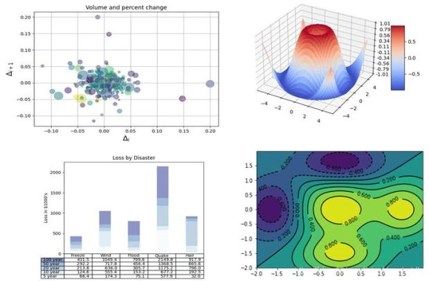

matplotlib简介
Contents
matplotlib简介#
matplotlib 是用python 开发的可视化和分析工具，是一款非常强大的 python 画图工具。具备优秀的跨平台交互式属性，能够生成出版质量级的图表。只需几行代码就可以生成各类图形，如下图所示：

1 matplotlib 绘图入门#
使用 matplotlib 绘图有两大类基本的方法:
1 Functional Approach
此类方法直接使用基本的命令即可，遵循着很简洁的步骤，在matplotlib中最常用的就是pyplot模块。
首先导入该模块；
导入可视化对象。通常使用numpy或pandas库的读取数据功能来帮助实现，比如pd.readcsv()；
从数据中提取需要展示的部分。这部分利用numpy或pandas库的函数可以较好实现；
利用plt.plot()绘制图形；
利用plt.xlabel、plt.ylabel和plt.xticks、plt.yticks等说明坐标轴的信息；
利用plt.legend()、plt.title()等说明图的信息；
最后使用plt.show()（jupyter下使用%matplotlib inline即可）将图形展示出来，在jupyter中执行完plot函数后就会自动出图了
from matplotlib import pyplot as plt
import numpy as np
x=np.linspace(0,10,20)
y=x**2
plt.plot(x,y)
plt.xlabel('X Label')
plt.ylabel('Y Label')
plt.title('First Plot')
Text(0.5, 1.0, 'First Plot')
2 Object oriented Interface
这一种是更常用的绘图方式。其基本思路是创建 Figure 对象，并对其使用各类方法。用此法绘图的思路中前面导入数据部分和前述一致，不再赘述，其他部分:
创建Figure对象
增加坐标轴：add_axes 有4个参数，对应axes被放置的位置（左（到左侧距离），底（到底侧距离），宽，高），取值范围[0,1]
使用axes绘图并配置坐标与图。
fig=plt.figure()
ax=fig.add_axes([0.1,0.2,0.8,0.9])
ax.plot(x,y)
ax.set_xlabel('X Label')
ax.set_ylabel('Y Label')
ax.set_title('Second Plot')
Text(0.5, 1.0, 'Second Plot')
更多关于matplotlib的内容，推荐大家在实际科研工作中查看文档使用了解：
使用matplotlib绘图的一些实例，可以直接copy它们的代码做修改：
还有一些基于Matplotlib开发的科研绘图工具箱：
更多内容可以看这里：awesome-matplotlib
2 matplotlib 绘图示例#
这里简单给出一个示例，看看画图的代码大体是什么样的，代码具体的解释也在下边列出了。
import matplotlib.pyplot as plt
import numpy as np
# f生成画布对象
fig=plt.figure(figsize=(8,6),dpi=60)
# 添加绘图区
ax=fig.add_axes([0,0,1,1])
# 生成x轴，y轴标签
plt.xlabel('xlabel', fontsize=18)
plt.ylabel('ylabel', fontsize=16)
#设置坐标轴范围
ax.set_xlim(1, 9)
ax.set_ylim(1, 900)
# 设置横纵坐标刻度
plt.xticks(np.arange(1, 10, 1), fontsize=16)
plt.yticks(np.arange(0, 900, 100), fontsize=16)
# 显示网格线
plt.grid()
ax.spines['right'].set_visible(False)
ax.spines['top'].set_visible(False)
# 加label以给出图例
labels=['X Square Plot','2 * X Square Plot','X Cube Plot','2 * X Cube Plot',"X **4 Plot"]
x=np.linspace(0,10,20)
y=[x**2, 2*x**2, x**3, 2*x**3, x**4]
for i, color in enumerate(['blue','red']):
# marker 的类型可以参考：https://matplotlib.org/stable/api/_as_gen/matplotlib.pyplot.plot.html
for j, marker in enumerate(['.','']):
plt.plot(x, y[i*2+j], color=color, marker=marker, label=labels[i*2+j])
line_i, = ax.plot(x, y[4], color="grey", label=labels[4])
line_i.set_dashes([2, 2, 10, 2])
# 绘制图例
ax.legend()
plt.legend(prop={'size': 16})
<matplotlib.legend.Legend at 0x7f1f481d2d90>